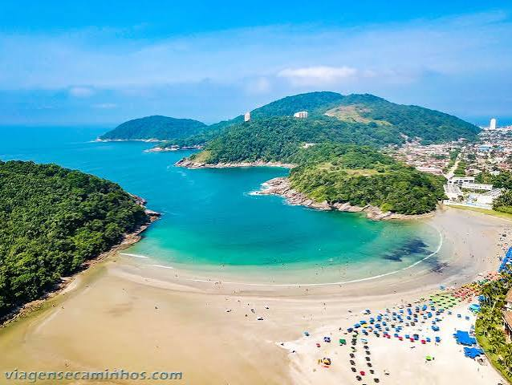
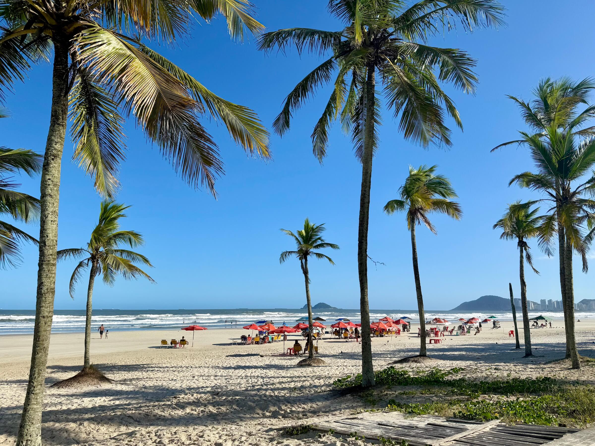

Guarujá é uma cidade incrivél para descobrir suas belezas e histórias do litoral paulista. Em Guarujá, praias, rios e a riqueza da Mata Atlântica se encontram para revelar a natureza, a cultura e as tradições que fazem da cidade um lugar especial. Conhecimento, turismo e identidade local, tudo em um só lugar.
Conheça a história, a importância e as riquezas naturais e culturais que fazem Guarujá uma cidade única.
Guarujá se destaca como estância balneária, atraindo mais de 1,5 milhão de turistas por ano com suas 27 praias e infraestrutura turística
O Guarujá se destaca como estância balneária, atraindo mais de 1,5 milhão de turistas por ano com suas 27 praias e infraestrutura turística
O Guarujá reúne história milenar, praias famosas, construções coloniais e um passado ligado ao turismo de luxo, sendo conhecido como a “Pérola do Atlântico”.
A cidade é uma estância balneária, o que reforça sua vocação turística e garante verbas estaduais específicas para promoção do setor. O turismo movimenta hospedagem, alimentação, transporte, comércio e serviços ligados à temporada.
O turismo em Guarujá funciona como uma atividade estruturada e diversificada, baseada em 27 praias, atrativos históricos, ecoturismo e serviços organizados pela Secretaria Municipal de Turismo.
A natureza de Guarujá é marcada pela Mata Atlântica preservada, praias cercadas por vegetação nativa, rica fauna marinha e aves, além de áreas protegidas e projetos de conservação.
Descubra alguns dos destinos que valem a visita em Guarujá.
| Localização | Atração | Indicação | Nota dos visitantes |
|---|---|---|---|
| Centro | Praia das Pitangueiras | Praia, lazer e comércio | 9,0/10 |
| Enseada | Praia da Enseada | Praia, esportes e passeios | 9,0/10 |
| Tombo | Praia do Tombo | Surfe e contato com a natureza | 9,0/10 |
| Astúrias | Praia das Astúrias | Lazer e passeios em família | 8,5/10 |
| Santa Cruz dos Navegantes | Fortaleza de Santo Amaro da Barra Grande | História e cultura | 8,5/10 |
| Jardim Guaiúba | Praia do Guaiúba | Natureza e tranquilidade | 8,5/10 |
| Praia de Pernambuco | Praia de Pernambuco | Praia e descanso | 8,0/10 |
| Morro da Campina | Morro do Maluf | Mirantes, fotografia e paisagens | 8,0/10 |
| Balneário Cidade Atlântica | Aquário Acqua Mundo | Vida marinha e passeio em família | 8,0/10 |